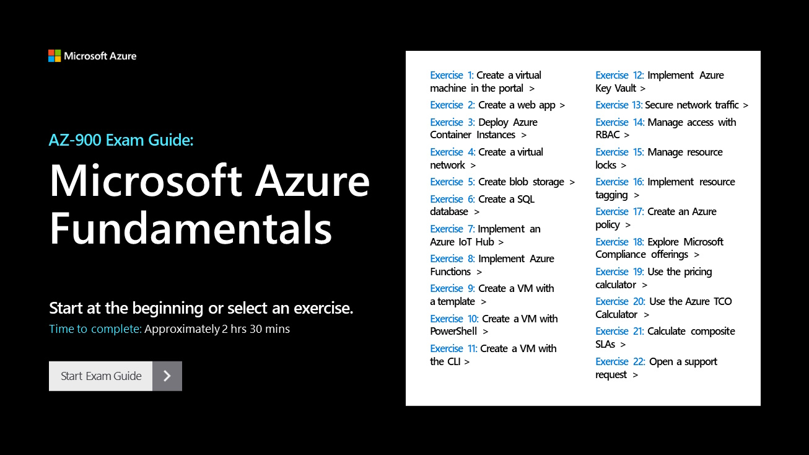

DIRECT LINK:AZ-900 EXAM GUIDE - AZURE FUNDAMENTALS
Client
Microsoft Azure
Project Outcome
This demo portal provides guided exam prep for learners preparing to pass the Microsoft Azure Fundamentals certification exam. It is part of a larger family of exam prep and lab simulation guides that I have worked on in a similar capacity – either in the same role as described here, or as a contributing writer and producer. This family of content has attracted more than a million visitors.
Project Background
The Azure product team sought our help to build learning modules that would allow users to practice walking through key concepts covered in the Azure Fundamentals course quickly, without having to spin up their own live environment or spend time waiting for resources to be provisioned as they moved through the content.
Collaboration and Planning Process
I collaborated with our internal technical program manager and Azure subject matter experts to troubleshoot and capture a client-provided demo environment. I also worked with our internal content manager to determine the scripting style for the project.
KEY INDIVIDUAL CONTRIBUTIONS
- Outlined demo flows for 22 exercises based on client-provided GitHub documentation
- Performed informal QA on the client-provided demo environment, reporting minor issues (e.g. documentation out-of-sync with new UI elements, such as button names) and major blocking issues (e.g. critical missing files and permissions issues)
- Captured and edited demo screenshots
- Wrote scripts for 22 exercises based on client-provided GitHub documentation
- Managed audio vendor
- Finalized production of interactive content for upload and delivery
TOOLS
Photoshop, Audacity, Microsoft 365, DemoMate (in-house demo creation software)
STYLE GUIDES AND LEGAL RESOURCES
Microsoft Writing Style Guide, Microsoft Brand Central, Microsoft CELA (Corporate, External, and Legal Affairs) documentation